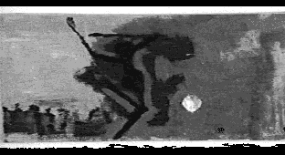
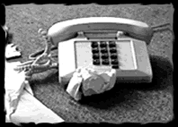

5
then the fella said "Conservative estimate 20 million."
talked about frederick douglass/ soujourner truth
and i was overload...overload. post modern correlate in the billions
numb on numbers/ shots of vermouth
phunk
connection with whodo guru's of an era that has seen its day
phunk
status/ standing/ stasis documented in scribbles on the society page

hands raise up to frigin
frakin sky
clip clap clapping out the
question...why
gotta fever so spanky it'ld
make the hip set flip
n' the tape to tape set at 90
on a trip hop tip
